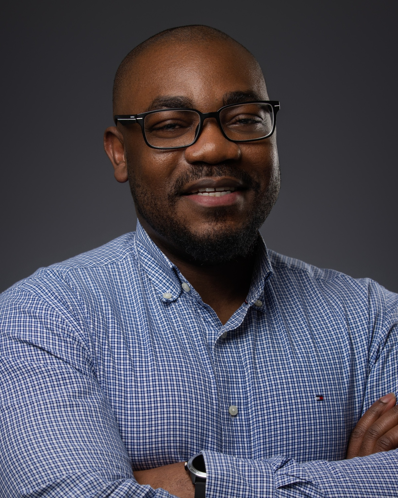
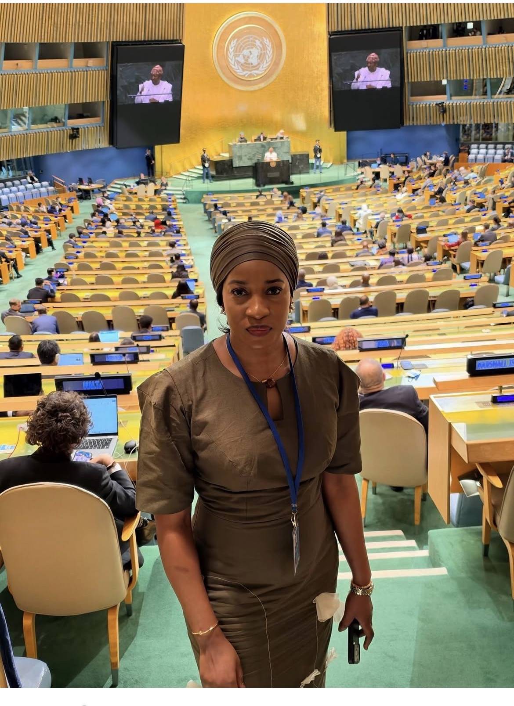

From theory
to practice.
For undergraduates and graduates ready to connect academic knowledge with workplace confidence, professional etiquette and stronger interpersonal relationships.
Communication · Career readiness
An initiative for youth empowerment
Giving young people the voice, training and connections to thrive in the workplace — and the confidence to shape their future.


01 / Our mission
Talent is everywhere. The confidence to express it — and the support to develop it — should be too.
Boost Foundation is an empowerment platform for young people. We bring inclusive education and practical workplace training together to build confidence, strengthen interpersonal relationships and help learners connect with opportunities beyond the classroom.
From university lecture halls to vocational workshops, we help bridge the gaps between education and employment. Our focus is a future-ready workforce where young people can communicate clearly, collaborate effectively and feel confident that their voice matters.
Who we serve
Designed for young people preparing for professional life, and the educational communities that support them.
For undergraduates and graduates ready to connect academic knowledge with workplace confidence, professional etiquette and stronger interpersonal relationships.
For technical students developing specialist expertise who want to strengthen their communication, leadership and networking skills alongside their practical knowledge.
For trainees and artisans preparing for commercial environments, with an emphasis on self-confidence, negotiation, working with others and professional presence.
02 / Our offerings
From your first professional conversation to your next career opportunity, develop the practical skills and relationships that help you belong, contribute and grow.
Interactive sessions on Zoom and other meeting platforms build confidence in remote workplaces. Practise clear communication, professional presence and effective online collaboration.
Learn and connect onlineDevelop public speaking, body language, conflict resolution and leadership skills through practical workshops. Learn in a supportive environment where you can try, reflect and improve.
Hands-on communication practiceReceive individual guidance and learn alongside experienced practitioners. Explore your strengths, observe professional life and connect your learning with the realities of work.
Guidance for your next stepLearn from experienced public speakers through conversations and masterclasses in communication, professional influence and expressing ideas with clarity.
Learn from different voicesConnect with peers, professionals, employers and thought leaders. Practise introducing yourself, exchanging ideas and building relationships that can support your career.
Build your professional communityExplore workplace opportunities that help you apply your skills and gain experience. Successful participants receive recognition, including certificates where offered by the programme.
Experience with purposeYour growth journey
Confidence grows through experience. Our approach brings learning, relationships and real-world exposure together.
Develop your communication skills and become more confident expressing your ideas.
Learn from mentors and speakers, practise interpersonal skills and grow your professional network.
Explore shadowing and internship opportunities, and gain recognition for your learning.
03 / Meet our founders
Founded by Anthony Boateng and Fatima Abdulai Issah, with a shared focus on empowering young people through confidence and connection.
Co-founder & Director
An advocate for youth career development and industry innovation, focused on bridging the gap between education and meaningful employment.
Co-founder & Executive Lead
A global development strategist and voice for youth empowerment, focused on sustainable education and interpersonal leadership.
04 / A bigger purpose
Our mission aligns with three Sustainable Development Goals, connecting youth empowerment with a more inclusive future.
Making practical learning more accessible through training, mentoring and lifelong development that prepares young people for workplace realities.
Building future-ready skills, digital fluency and professional awareness that connect young people with the changing needs of industry.
Addressing gaps in access to learning, networks and support so more young people can participate, contribute and have their voices heard.
Watch & learn
Future videos will bring training insights, speaker conversations and stories from the Boost community into one place.
A little more clarity
Our focus is young people in universities, polytechnics, and vocational or training colleges who want to build confidence, strengthen interpersonal skills and explore professional opportunities.
Training can take place online through Zoom or other virtual meeting platforms, as well as in person. The format will depend on the individual programme.
Our focus is confidence, communication and interpersonal relationships. Mentoring, coaching and professional exposure help connect these skills with your personal and career development.
Internships are opportunities to explore, rather than a guaranteed placement. Availability and any selection requirements depend on the particular opportunity.
Successful participants receive recognition for their progress. This may include a certificate, depending on the programme and its completion requirements.
The future needs your voice
Discover the skills, connections and experiences that can help you move forward with confidence.
Find your boost